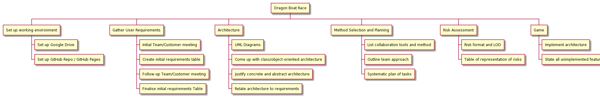
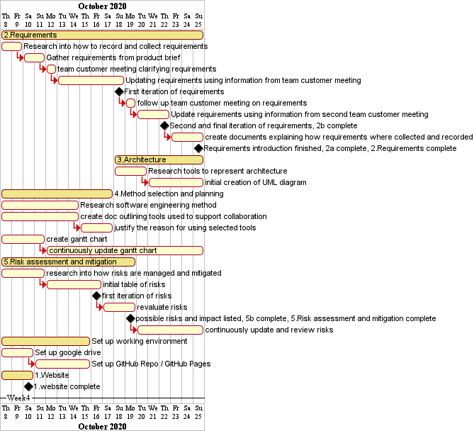

<-Back to home
Method Selection and Planning
Software Engineering Method
Our team chose to go ahead with an Agile Software Engineering method, one akin to Scrum. As we are a relatively small team of 6 Agile suited us well as we could quickly focus on the tasks at hand, as opposed to non-agile methods which require lots of time to set up detailed and rigid plan requirements. With Agile, we can plan quickly and change our requirements easily while causing as little disruption to the rest of development as possible.
A plan-driven method was also considered by some members of the team, however this idea was discarded as we came to realise we were not sure about our requirements. Each Team Meeting we had for the first few weeks resulted in a list of new questions about the product that were to be addressed in a Team-Customer Meeting. If we were to have used a plan-driven method, we would have lost a great deal of time spent redesigning our plan every time our requirements changed, thus an Agile method was chosen.
Agile suited our weekly meetings, where we would initially discuss the results of the most recent Team-Customer meeting before going on to update our requirements. Therefore a Scrum-like Agile method is what we chose to adopt, weekly meetings which start weekly sprints.
Collaborative Tools
To support the team in our Agile method, we used a selection of development and collaboration tools:
Zoom
For our weekly meetings, we used the video conferencing software Zoom. We chose Zoom mainly because this is the software used to conduct our weekly Engineering1 practical sessions, and we chose to continue using the program due to its various helpful features. These features include efficient synchronous communication between team members, which is very important for improving team spirit, as well as screen sharing functionality, which proved useful when working on visual-oriented tasks such as diagrams. The ability to screen share also helped us to walk through other team members who were having difficulties.
Discord was our other main form of communication. We used it to talk to other team members, primarily through text channels. Discord also offers voice calls and screen sharing and, while we did use Zoom for our weekly meetings, these features were very useful for quick, spontaneous, and informal communication that didn’t necessarily require each team member to be present. It was well suited to our small team, and we had created multiple text channels to discuss different parts of the project.
Other reasons as to why we chose to use Discord include the fact that all of us already had used it for other purposes, and therefore we all had accounts - this made the setup quicker and easier as we all had prior experience with using Discord. In addition, Discord has a smartphone app, which made it easier to communicate with team members in emergencies while they were away from their computer.
For the majority of our planning, documentation, and reports, the team elected to use Google Drive with Google Docs. It was an easy decision to make as the University provided us all with Google Suite accounts and so the setup was very easy. Our shared drive was very valuable to us as it allowed us to centrally store the majority of our documents, including UML diagrams, a Gantt chart, and other pieces of documentation. In addition, Google Docs enabled us to collaboratively and concurrently edit such documents. The “comment” feature on Google Docs also enabled us to give feedback on each other’s work in a clear and straightforward way, directly on the document itself.
Another major tool used by our team was GitHub. GitHub is a multi-faceted tool which provides our team with many features that we were able to use to facilitate development. The main reason we chose GitHub was for its code hosting capabilities and version control.
By using Git and GitHub we were able to collaboratively write code for the game without having to resort to manually sending each other our changes via email/Discord. We had a centralised codebase where we would merge our changes in an effective manner. Alongside this, the version control offered by Git enabled us to revert any harmful changes and go back to the last working version. As it keeps track of the history of all changes made, we were able to look back and figure out what went wrong,
Finally, GitHub also provides GitHub Projects, which are effectively Kanban boards
and are useful in dealing with project planning in Agile/Scrum environments. Since we had chosen to use Scrum as our software engineering method, and had already chosen to use GitHub for the aforementioned reasons, it seemed natural to use GitHub Projects as a means of planning out tasks. Each team member would take on their assigned task from the To Do column, place it in the In Progress column, and then transfer it to the For Review column. Finally, once another team member had reviewed the task, it was moved to the Done column. The Kanban board is very flexible, and any new tasks that appeared simply had to be put into the To Do column. This flexibility fit in very well with our Agile method, where our requirements would often change at weekly intervals.
The bulk of the development was done using LibGDX, a free open-source framework which allows you to develop games using Java. We chose to use this as opposed to other java based game development tools such as Slick2D, LITIENGINE, or LWJGL (which LibGDX is based upon) as these proved a variety of issues including a steep initial learning curve, a general lack of support and updates, and poor or lacking documentation. We chose to use LibGDX and, in conjunction with Git/GitHub, has served us perfectly. It was easy to set up and use, with plenty of documentation in the form of its own community driven Wiki.
Team Approach to Team Organisation
Our team decided to approach organisation in a flexible way, to allow for an iterative and robust development process. We opted for an agile team organisation method based off of the Scrum approach, having weekly Scrums in conjunction with daily message communication.
We would conduct weekly meetings in which we would allocate tasks to team members for the next weekly sprint, these would be based on the deliverables listed on the Assessment Brief. For each individual task, we would estimate how much work was required and what skills were necessary, we would then assign the task to the team member that felt the most qualified to approach it. However, some tasks required a lot less work than others and so, to ensure the workload was divided evenly, some team members were assigned multiple tasks from different sections. While this kept things fair, it also helped to increase our bus factor as if one team member was suddenly unable to produce any work, there was a high likelihood that another team member was also (or previously had been) working on that same task and could easily assume the other’s work.
We also peer reviewed each other's work weekly and gave feedback. This was also to make sure that all team members were happy with the tasks they were assigned or, if they were struggling, whether they needed another member to help or to switch tasks completely. We felt that this system helped massively as there was a lot of open communication between the group so that each member felt sufficiently supported and the majority of issues were nipped in the bud.
We also believe that this approach to team organisation was especially appropriate for the given project because of the short time frame and small team size.
The Assessment Brief breaks down each deliverable into multiple separate tasks, a visualisation of this can be seen on our website in the form of a Work Breakdown Diagram. We believed that assigning team members to different tasks would help speed up development as multiple parts of the project were making progress at any one time, rather than the entire team working together on one task. We felt this would inevitably leave some team members out and could create tension between members who may be trying to take control over the current task, ultimately slowing down development.
As our tasks were directly derived from the assessment brief and elicited requirements, team members always fully understood which requirement or deliverable they were working towards fulfilling. This ensured that all relevant deliverables were linked back to the requirements, as well as all written documentation being clear, concise, and complete.
Work Breakdown

Weekly snapshots of our Gannt charts
Week 2
Initial Gantt chart is created with mainly research based tasks to be completed.
Architecture is not listed as requirements are required from which the architecture is based off.

Week 3
After an additional week the first set of milestones has been reached with the first iterations of risks and requirements.
The plan changed to include further research tasks and some writeups on why we are going to uses them.

Week 4
Requirements became a priority to finish so that the designing of the architecture could begin.
All the initial risks where identified with risks in future being reassessed on a weekly basis.

Week 5
Reaching the end of method selection and planning documentation with the overall project plan also continuously being reviewed on a weekly basis,
allowing for future weeks to focus on architecture.
Week 6
UML diagram expanded in much greater detail to allow for more clarity when the implementation phase begins in the following week.
Week 7
Final documents for the architecture are created allowing for the initial creation of the first abstract class, entity from which other classes are derived.
Week 8
Almost all of the time was spent on implementation with a focus on following the critical path, allowing the game to be playable so that testing can begin.

Week 9
Finishing on implementation allowed for some quick debugging before submitting project.

Critical Path